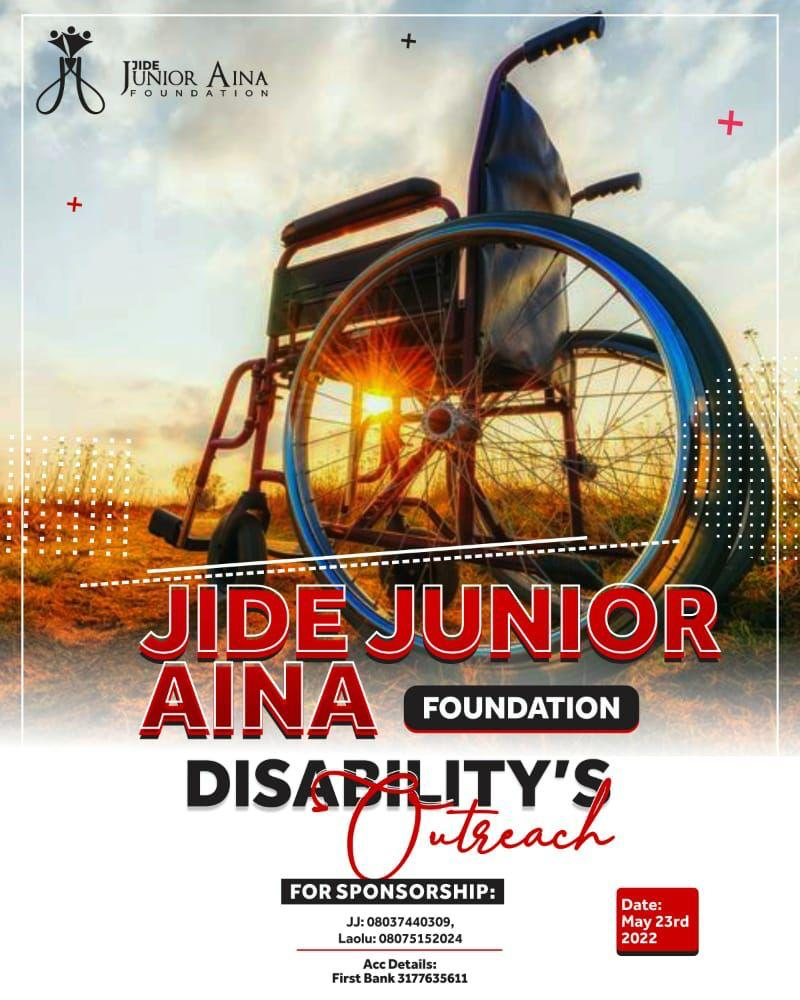

Become a volunteer
At Jide Junior Aina Foundation we are open to participation of well meaning members of the society. kindly join our team of volunteers from diverse fields of life.
Donation
Touching lives requires funding, you can contribute your bit. Thank you for your kind donations.
TOGETHER WE CAN CHANGE THE WORLD.
"we make a living by what we get, but we make life by what we give" -Winston Churchill.



.jpeg)


Recent From Our Blog
here are posts from our desk. read, learn and share.
.jpeg)
Superstitions And Sickle Cell Anemia
(Aina Olaoluwa) Nov. 2021 21Sub Saharan Africa has 75% world annual sickle cell births. a trend that needs a lot of attention from government end citizens. Sickle cell anemia a disorder of the hemoglobin which leaves the carrier with a vulnerable immune system, making them frequently sick, and frequently requiring medications for the boost of their immune, mostly folic acid for the continuous boost of blood levels. .
Learn More...
FIRE ON THE MOUNTAIN
(Aina Olaoluwa) Nov. 2021 21We are faced with an increasing risk of Global warming. The COP26 comes to an end and governments are making applaudable promises as usual. However, there is an urgent need for the implementation of climate promises, especially by the developed world. The need to meet the 1.5 – 2 degrees Celsius containing of global warming by 2030 is seeming not realistic with the current attitude of the world, reflecting a larger lack of awareness or consciousness of the nature of the situation.
Digital Education in Nigeria.-The way Forward
(Aina Olaoluwa) Nov. 2021 21Education and skills acquisition in the world at this point in history is taking a new shape. As what is relevant education is changing just like every sector of our today world. While there exists a deficit in education delivery in Africa, we must n